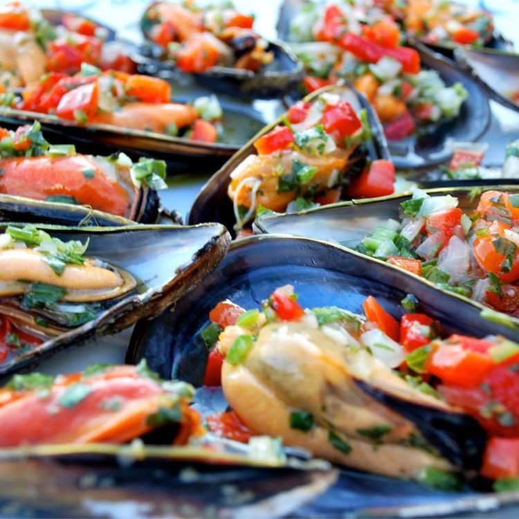

Back to Index
Mussels Vinaigrette

Description
This is an excellent way to serve mussels on the half shell. They are topped with a tangy blend of bell peppers and vinaigrette dressing. This makes a good for appetizer for a larger number of guests.
Ingredients
- 24 fresh mussels, scrubbed and debearded
- 1 small green bell pepper, seeded and diced
- 1 small red bell pepper, seeded and diced
- 1 small yellow bell pepper, seeded and diced
- ½ cup olive oil
- ¼ cup red wine vinegar
- 2 tablespoons chopped fresh parsley
- 1 hard-cooked egg, chopped
- ½ teaspoon salt
- 1 pinch ground black pepper
Steps
- Bring one inch of water to a boil in a large pot. Add mussels, cover, and steam for 3 to 5 minutes until they are all open. Drain. Remove one side of each shell, arrange the open shelled mussels on a serving platter, and discard any mussels that do not open.
- In a medium bowl, mix together the red, yellow, and green bell peppers, olive oil, wine vinegar, parsley, egg, salt, and pepper. Spoon the mixture over the mussels on the shells and refrigerate until serving.